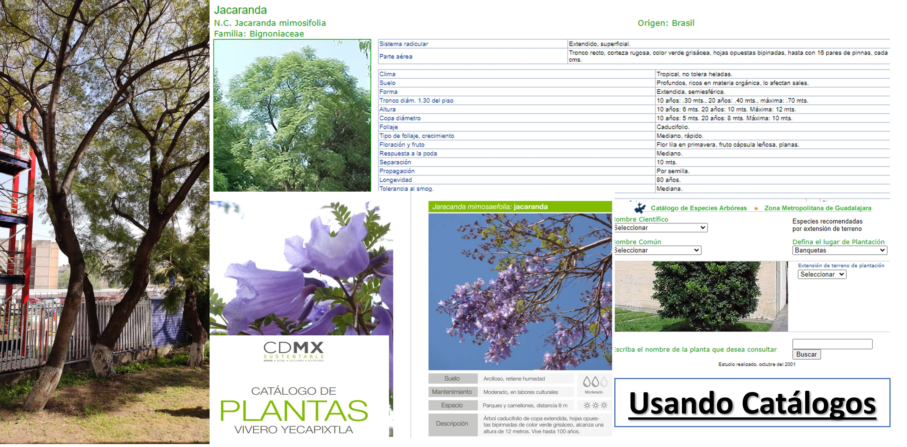

Catálogo y mapeo de especies arbóreas en UPIITA
(Área de Estudio 1)
Toma de Capturas aéreas con ayuda del Dron PHANTOM 4RTK
Con ayuda del Coordinador de Laboratorios y Protección Civil, Eduardo Ulises Velázquez Pérez y su equipo de vuelo del dron, se llevaron a cabo los siguientes pasos para la realización de Tareas (Toma de fotografías programadas de acuerdo con el objetivo específico), en este caso capturas a 90° para la creación de Ortofoto y 45° para modelado 3D.
- Localizar un Punto de Control medio para llevar a cabo el despliegue y descenso del dron.
- Se coloca la Antena RTK para tener acceso a la señal satelital y obtener un margen de error mínimo en la localización del punto de control.
- Se programa la tarea a realizar por medio del control
- Se determina el área de análisis, recorrido, velocidad y altura
- Se realiza una inspección a la batería, las hélices y la conexión tanto a la antena como al controlador
- Empieza la tarea de forma automática
- Se monitorea el estado del dron y la conexión durante la ejecución y progreso de la misma.
Digitalización 2D y 3D
DJI Terra
Con ayuda del C. de L. y P. C; el profesor Ulises Velázquez y el apoyo de computo con tarjeta gráfica especializada de parte del Docente, Niels Henrik Navarrete Manzanillo, se utilizó la plataforma de DJI Terra para realizar una ortofoto 2D de la escuela y un modelo 3D de la misma.
Google Earth para mapeo de zonas arbóreas
Se utilizo esta herramienta para crear un mapa personalizado de la escuela, por medio del uso de marcadores se destacaron los puntos clave el proyecto, y gracias a que se permite importar archivos TIFF (un formato de archivo informático para almacenar imágenes de mapa de bits, formato en que se guarda la ortofoto), se puede visualizar de mejor manera las ubicaciones a trabajar como se muestra a continuación para el área de estudio 1:
Google My Maps para Obtener el Mapa Final
En este caso se exporta un documento de formato KML o KMZ, de Google Earth con los marcadores establecidos. Este archivo se importa en Google My Maps y aquí se añaden línea, formas, imágenes y detalles específicos de cada uno de los marcadores. De igual forma se puede extraer el código HTML para llamar la ex¿tensión del mapa a una página Web, dando como resultado el mapa mostrado en la sección "MAPA", que se encuentra en el menú de esta página.
Google Lens y Catálogos arbóreos para identificar las especies Censadas
Lens compara los objetos de fotos con otras imágenes, las cuales clasifica por su grado de similitud y relevancia con respecto a los objetos de las fotos originales. También analiza los objetos que aparecen en ellas para encontrar otros resultados relevantes en la Web.
EJEMPLO JACARANDA

- 